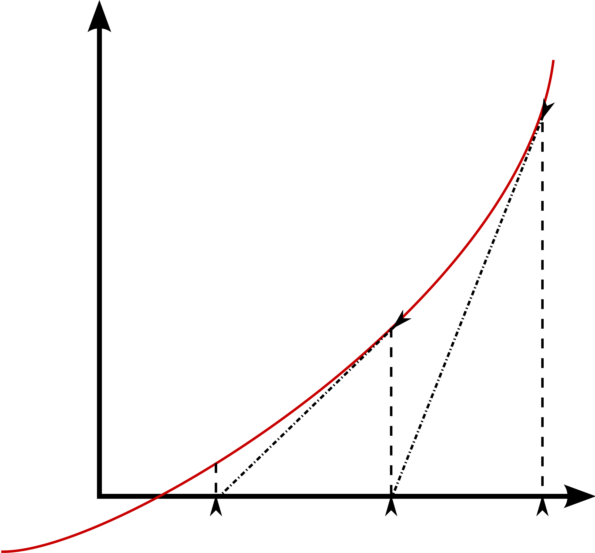

Data Task¶
[words about taskdata, as well as FSM]
- TaskDataFunctions.NewtonRaphson(fnc, jacobian, guess, thresh, targ)¶
Determines the roots (or zeros) of a function by iteratively solving the equation while varying the inputs until the result equals zero. More specifically, each each iteration is solved using
\[x_{n+1} = x_n - \frac{f(x_n)}{\frac{\partial f}{\partial x}}\]This approaches the x-intercept of the function with every iteration.
It is important to note that this method relies on a somewhat accurate initial initial guess, otherwise the algorithm could converge on the wrong zero point.
{kind=link}
- TaskDataFunctions.dg_dtheta(theta)¶
Partial derivative of position with respect to theta. This is the negative of the jacobian, and is passed into the Newton-Raphson function. It is calculated from the motor positions (in radians) using the following equations
\[ \begin{align}\begin{aligned}\frac{\partial g}{\partial \bar{\theta}} = \begin{bmatrix} f_{0,0} & f_{0,1}\\\ f_{1,0} & f_{1,1}\\\end{bmatrix}\end{aligned}\end{align} \]where
\[ \begin{align}\begin{aligned}f_{0,0} &= \frac{k \theta_1}{l} \\\ f_{0,1} &= \frac{-k \theta_2}{l} \\\ f_{1,0} &= \frac{k \theta_1 \left( \frac{k (\theta_{1}^2 - \theta_2^2)}{2 l} - \frac{l}{2} \right)}{l\sqrt{k\theta_2^2- \left( \frac{k (\theta_1^2 - \theta_2^2)}{2 l} - \frac{l}{2} \right)^2}} \\\ f_{1,1} &= -\frac{2k\theta_2 + \frac{k\theta_2}{l^2} \left(k(\theta_1^2-\theta_2^2)-l^2 \right)}{2\sqrt{k\theta_2^2- \left(\frac{k(\theta_1^2 - \theta_2^2)-l^2}{2l}\right)^2}}\end{aligned}\end{align} \]In these equations, \(l\) refers to the distance between the pivots (10 in) and \(k\) is the coefficient which converts motor angle to linear position of the arm. The derivation of \(k\) can be found under Analysis section on the Mechanical Design page.
- Parameters
theta – The set of the two motor angles (in radians)
- TaskDataFunctions.draw(i)¶
- TaskDataFunctions.g(pos, theta)¶
This function represents the forward kinematics for the system. It accepts a target position in X Y coordinates, as well as positions of the two motors, and returns an error value: the difference between them.
\[err = \bar{X}_{targ} - \bar{f}(\theta)\]where
\[ \begin{align}\begin{aligned}f_x(\theta_1, \theta_2) &= \frac{k \left(\theta_{2}^2 - \theta_{1}^2\right)}{2 l} + \frac{l}{2}\\ f_y(\theta_1, \theta_2) &= \sqrt{k \theta_{2}^2 - \left(\frac{k \left(\theta_{2}^2 - \theta_{1}^2\right)}{2 l} + \frac{l}{2}\right)^2}\end{aligned}\end{align} \]where \(k\) refers to the conversion factor between motor angle and power screw position, and \(l\) refers to the distance between the two pivot points; 10 inches in our case. K is derived on the Mechanical Design page under Analysis.
- Parameters
pos – Target position in X Y coordinates
theta – A set of theta values describing the position of the motors.
- TaskDataFunctions.move(draw, vals)¶